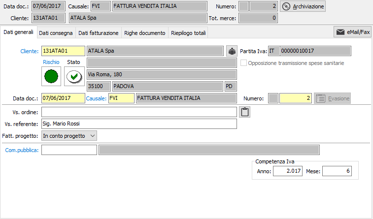
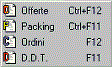
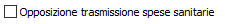
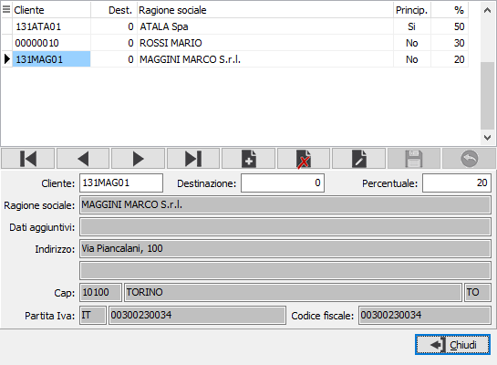

Dati generali
All’inizio di una nuova fattura il cursore è posizionato sul campo cliente della linguetta dati generali, da cui inizia l’inserimento.

CLIENTE: codice alfanumerico di 8 caratteri, presente in anagrafica clienti, che individua il cliente da trattare. Sul campo, la cui compilazione è obbligatoria, sono attive le funzioni di ricerca (F9) ed accesso rapido alla tabella (CTRL+W) per eventuali nuovi inserimenti o variazioni. Il codice inserito in questo campo è quello del cliente a cui è intestata la fattura. Dopo aver selezionato il codice del cliente vengono visualizzati, senza possibilità di modifica, i dati anagrafici. Se presente nella linguetta preferenze dell’anagrafica cliente, viene anche compilato automaticamente il successivo campo causale fattura con la causale esistente in anagrafica. La procedura non consente l’inserimento della fattura nel caso in cui il campo Codice stato dell’anagrafica cliente contenga i valori Bloccato o Spedizioni sotto controllo. Nel caso il cliente abbia associato delle lettere di intento sarà richiesto quale lettera utilizzare sul documento.
Vengono visualizzati, tramite appositi indicatori visivi, lo stato di rischio, derivante dal Company Shield e lo stato di affidabilità derivante dalla situazione amministrativa; cliccando sull'etichetta Rischio viene mostrata la legenda che spiega i significati dei colori mostrati, cliccando invece sull'indicatore colorato, se il servizio Credit Shield è attivo e ci sono informazioni, si accede direttamente all'analisi della partita Iva con quella riportata sul documento, posizionati sulle informazioni semaforiche. Se lo stato di rischio non viene visualizzato significa che il servizio è attivo, ma l'utente con cui si è collegati non è configurato come utente Company Shield oppure non ha l'abilitazione alla visualizzazione dei semafori.
Sia l'indicatore di rischio che l'indicatore di stato non causano alcun blocco all’inserimento del documento, ma si limitano a mettere sull’avviso l’utente.
Gli indicatori di stato possono essere così riassunti:
punto interrogativo: indica che non è presente nessun valore da controllare;
segno di spunta verde: indica che è presente un fido sufficiente a coprire gli eventuali scoperti;
punto esclamativo su fondo giallo: indica di fare attenzione perchè non è presente nessun fido ed è presente uno scoperto;
X su sfondo rosso: indica che è presente un fido che non è sufficiente a coprire lo scoperto.
Cliccando sull'immagine, se gestiti i saldi clienti/fornitori in configurazione, si attiva la finestra video di Situazione amministrativa che consente di visualizzare il fido concesso e la situazione amministrativa dettagliata; nel caso esista uno scoperto di fido il totale viene evidenziato in rosso. L’eventuale saldo negativo fra i vari valori non comporta tuttavia alcun blocco, ma consente all’utente di decidere in merito all’opportunità di inserire il documento.
DATA DOCUMENTO: campo data in cui viene visualizzata la data di sistema, modificabile dall’utente.
CAUSALE: codice alfanumerico di 3 caratteri presente nella tabella Causali Fatture che definisce la tipologia di fattura in esame. Se, presente, viene visualizzata la causale esistente nelle preferenze dell’anagrafica del cliente in esame, modificabile dall’utente. Sul campo sono attive le funzioni di ricerca (F9) ed accesso rapido (CTRL+W) sulla tabella stessa.
NUMERO: campo numerico che contiene il numero progressivo della fattura. Viene compilato automaticamente dal programma in base alla serie contenuta dalla causale. E’ modificabile dall’utente.

Premendo l'apposito pulsante Evasione, compare un menù che consente l'evasione dei documenti; se la voce non è attiva significa che non ci sono documenti da evadere di quel tipo. Accanto alla voce sono visualizzati anche i tasti funzione per la relativa evasione. Premendo il tasto F12 è possibile effettuare la selezione degli ordini, da inserire nella fattura. Se attivo da configurazione, Premendo il tasto F11 è possibile effettuare la selezione dei D.D.T., da inserire nella fattura. Premendo il tasto CTRL+F11 è possibile effettuare la selezione del packing, da inserire nel Ddt. Premendo il tasto CTRL+F12 è possibile effettuare la selezione delle offerte, da inserire nella fattura.VOSTRO ORDINE: campo alfanumerico per l’eventuale descrizione degli estremi dell’ordine del cliente.
VOSTRO REFERENTE: campo alfanumerico per l’eventuale descrizione del referente del cliente. Se presente, viene proposto automaticamente il referente presente nell’anagrafica del cliente intestatario della fattura, modificabile. Sul campo sono disponibili le funzioni di ricerca (F9) sui contatti eventualmente presenti sull'anagrafica.
DATE COMPETENZA: Indicare l'eventuale periodo di competenza della fattura (se gestito in configurazione vendite).
CODICE PROGETTO: Codice alfanumerico di 15 caratteri che definisce il progetto di riferimento. Sul campo sono attive le funzioni di ricerca (F9) ed accesso diretto alla tabella (CTRL+W). Il campo è presente solo se attiva la gestione progetti.
FATT. PROGETTO: combo box che stabilisce il tipo di fattura in relazione al progetto in uso. Valori ammessi: In conto progetto, A saldo progetto. Se la fattura è a saldo chiude il relativo progetto. Questa opzione è presente solo se gestito il progetto sulla testa del documento.
COMMESSA PUBBLICA: Codice della commessa pubblica, sul campo sono attive le funzioni di ricerca (F9) ed accesso diretto alla tabella (CTRL+W). Il campo è presente solo se attiva la gestione della normativa antimafia e se gestita per il tipo documento.

Se attiva in configurazione vendite la voce "Gestione consenso trasmissione spese sanitarie" ed il cliente è una persona fisica (codice fiscale in anagrafica non numerico ed assenza di partita Iva), sarà presente la casella mostrata a lato. Nel caso venga spuntata, nella stampa della fattura viene stampata la dicitura relativa all'opposizione (Testi stampe con codice 47 Dicitura opposizione a trasmissione dati tessera sanitaria).


Se attiva in configurazione la gestione delle fatture cointestate sarà presente il pulsante per accedere ai dati relativi; la finestra consente l'inserimento dei cointestatari che devono essere comunque codificati nell'anagrafica clienti o sulle destinazioni, l'intestatario del documento viene gestito in automatico dalla procedura. Viene richiesta obbligatoriamente una percentuale da assegnare ad ogni cointestatario relativamente alla quotaparte spettante rispetto al totale del documento. I cointestatari della fattura vengono stampati nel corpo della fattura stessa.